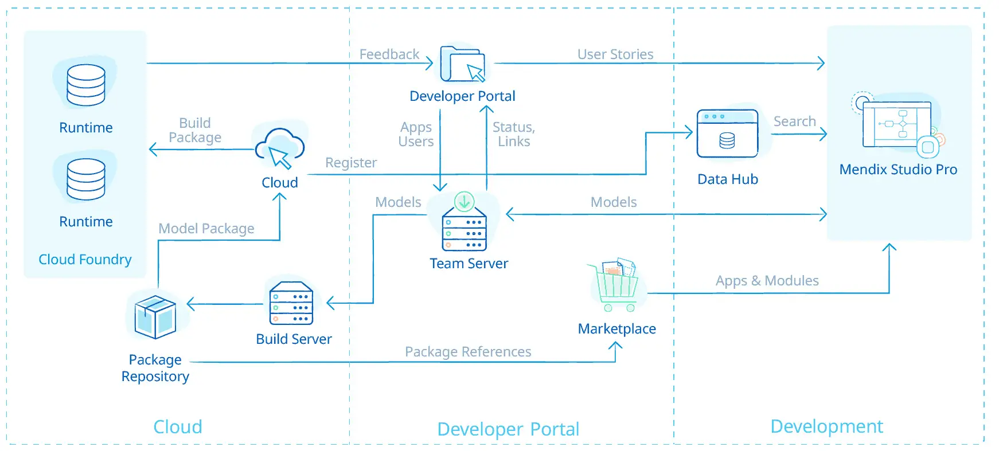

The Mendix Platform is designed to accelerate enterprise app delivery across your entire application development lifecycle, from ideation to development, deployment, and the ongoing management of your application portfolio in the cloud or on premises. Mendix offers both no code (visual-modelling) and low code (highly extensible, integrated tooling to support cross-functional teams working collaboratively). Business-domain experts such as analysts and citizen developers can work alongside expert developers to achieve much greater levels of business agility and consequently accelerated delivery, while the platform’s cloud-native architecture and automation tools support the deployment, management, and monitoring of highly-available enterprise-grade applications.
In a digital-first world, customers want their every need anticipated, employees want better tools to do their jobs, and enterprises know that sweeping digital transformation is the key to survival and success. Mendix, the low-code engine of the Siemens Xcelerator platform, is quickly becoming the application development platform of choice to drive the enterprise digital landscape. Mendix’s industry-leading low-code platform, dedicated partner network, and extensive marketplace support advanced technology solutions that boost engagement, streamline operations, and relieve IT logjams. Built on the pillars of abstraction, automation, cloud, and collaboration, Mendix dramatically increases developer productivity and engages business technologists to create apps guided by their particular domain expertise. Mendix empowers enterprises to build apps faster than ever; catalyzes meaningful collaboration between IT and business experts; and maintains IT control of the entire application landscape. Consistently recognized as a leader and visionary by leading industry analysts, the platform is cloud-native, open, extensible, agile, and proven. From artificial intelligence and augmented reality to intelligent automation and native mobile, Mendix and Siemens Xcelerator are the backbone of digital-first enterprises. The Mendix low-code platform is used by more than 4,000 enterprises in 46 countries and has an active community of more than 300,000 developers who have created over 250,000 applications.
Mendix Platform
The Mendix Platform is designed to accelerate enterprise app delivery across your entire application development lifecycle, from ideation to deployment and operations. Mendix enables you to implement both Agile and DevOps best practices. It even goes beyond that by involving business stakeholders in the actual development of the applications.
Based around our three core principles of speed, collaboration, and control, Mendix offers a complete platform for your enterprise application delivery needs.
- Improve customer engagement and experiences
- Increase collaboration and efficiency
- Migrate to the cloud
- Future-proof business processes
Mendix Studio PRO
Mendix Studio Pro is our low-code IDE for professional developers. It's a powerful visual model-driven development environment to build apps on the Mendix Platform. With Studio Pro you can easily create, change, integrate, test and deploy your applications, all in one place.
Mendix & Siemens Relationship
Mendix is a subsidiary of Siemens and its market differentiation is based on the combined support for private and professional developers, on the library of composable assets for different business verticals available in the Mendix Marketplace such as App Services and Solutions, and on the specific target of suppliers

The only way to create a unified development experience that strikes the right balance of ease of use, expressiveness, and flexibility is through deep integration across the entire Smart App stack. A much deeper and broader stack than they are state app platforms. That's why they joined forces with Siemens. The combination of the Mendix Low-Code platform and Siemens MindSphere uniquely covers all elements of the Smart App stack. MindSphere is Siemens' open cloud-based IoT operating system that includes IoT connectivity, asset management, time series storage, of events, data processing and analysis services (e.g. anomaly detection, signal calculation, trend prediction). We intend to create a unified, AI-assisted development experience with deep integration of MindSphere's event management, data and analytics services into Mendix, to create the world's leading low-code and (industrial) IoT platform.